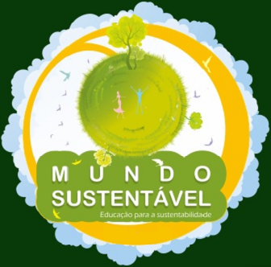

A cada ano, a South Fórida University é palco da Conferência de Sustentabilidade da Comunidade, um evento aberto a participantes interessados em compartilhar as melhores práticas para o futuro sustentável da Flórida.
Seus estudantes têm contato com as práticas de sustentabilidade em várias áreas, como parte do currículo obrigatório da escola.
A gestão local também se dedica a garantir que todos os novos edifícios tenham selo de sustentabilidade, atestando que a construção segue padrões ecológicos e faz uso racional dos recursos, como água e luz, durante a operação.